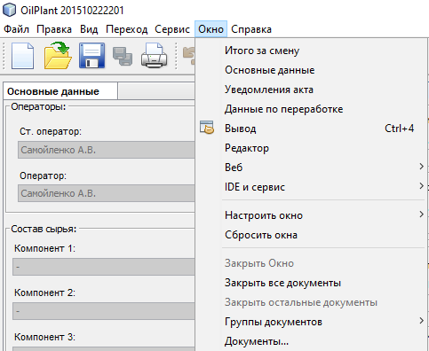

Описание меню "Окно"
Меню "Окно"
предназначено для управления видимостью рабочих окон приложения.
Внешний вид меню "Окно
:

В верхней части меню указан перечень окон, предназначенных для работы с актом:
"Основные данные"
"Данные по переработке"
"Итого за смену"
"Уведомления акта"
При выборе одного из этих пуктов меню, соответствующее окно будет отображено в назначенном месте окна приложения,
при условии, что это окно было закрыто.
Остальные пункты меню являются стандартными для платформы и выполняют операции по работе:
С группами документов
С веб-браузером
С настройкой поведения окон
- плавающие, разворачиваемые и т.д.